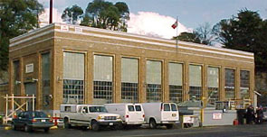

Services
Nous offrons des services complets de bassin de radoub à une clientèle nationale et internationale 24 heures par jour, sept jours par semaine et 365 jours par année.
Station de pompage
Le personnel de la station de pompage est responsable du remplissage et de la purge du bassin, de l'alimentation en électricité, de l'air comprimé, des eaux usées et de l'eau douce. Pour de plus amples renseignements, veuillez communiquer avec le superviseur de la station de pompage au 250-363-3768 ou avec le service de la station de pompage au 250-363-3788.
Électricité
Pour connaître les services d'électricité à jour, veuillez communiquer avec le superviseur en électricité au 250-363-3991.
Cour de triage
Le personnel de la cour de triage fournit une diversité de services, y compris la mise en place de tin, l'aide à la mise en cale sèche et à la remise à flot des navires, la maintenance des lieux et l'intervention en cas de déversement d'hydrocarbures.

Grue
Nos clients sont desservis par trois ponts roulants électriques sur rails pour charges lourdes, par une grue à tour de 7 tonnes sur la jetée Sud, ainsi que par trois grues mobiles.
Grues au bassin de radoub d'Esquimalt :

Grue à portée variable Krupp de 150 tonnes (1982) – capacité de 150 tonnes à 35 mètres et de 100 tonnes à 50 mètres. Cette grue est munie d'un crochet principal capable de lever des navires entiers jusque sur la terre aux fins de radoub et de réparation, ainsi qu'un crochet auxiliaire possédant une capacité de 15 tonnes habituellement utilisé pour transporter des matériaux jusque sur les navires. Elle est située sur le côté Nord du bassin et est très utile pour répondre aux besoins de nos clients pour des navires accostés au quai de débarquement Nord.
Grue à portée variable Ebco de 30 tonnes (1984) – Cette grue à manœuvre rapide peut être déplacée d'un bout à l'autre du bassin et possède une capacité de 30 tonnes à 35 mètres.
Grue à portée variable Konecrane de 30 tonnes (2010) – La plus récente de nos grues sur rails possède une portée de 42 mètres. Cette grue peut parcourir toute la distance du côté Sud du bassin de radoub.
La grue à tour Pecco de 7 tonnes est située sur la jetée Sud du bassin de radoub d'Esquimalt et peut desservir les navires accostés à la jetée Sud.
De plus, le bassin de radoub d'Esquimalt comprend trois grues mobiles : une grue RT Grove de 30 tonnes à pneus en caoutchouc, une grue mobile de 25 tonnes à pneus en caoutchouc et une grue Hyster Bullmoose de 10 tonnes qui est idéale pour les applications dans le fond de la cale sèche.
Nous possédons également des chariots élévateurs à fourche de 4 et de 6 tonnes qui sont à la disposition de nos clients.
Gestion des risques
Le groupe de gestion des risques travaille à régler les problèmes relatifs à la sûreté, aux incendies, à la sécurité et aux relations publiques. Il veille également à ce que le bassin de radoub d'Esquimalt maintienne sa certification en installation maritime en vertu des exigences du Règlement sur la sûreté du transport maritime et du Code international pour la sûreté des navires et des installations portuaires. Ce groupe effectue des tâches de coordination principalement dans l'ombre afin d'aider à garantir que les employés du bassin de radoub d'Esquimalt, ainsi que les employés de compagnies travaillant à l'extérieur des installations du bassin de radoub d'Esquimalt, travaillent dans un environnement sûr.
- Date de modification :